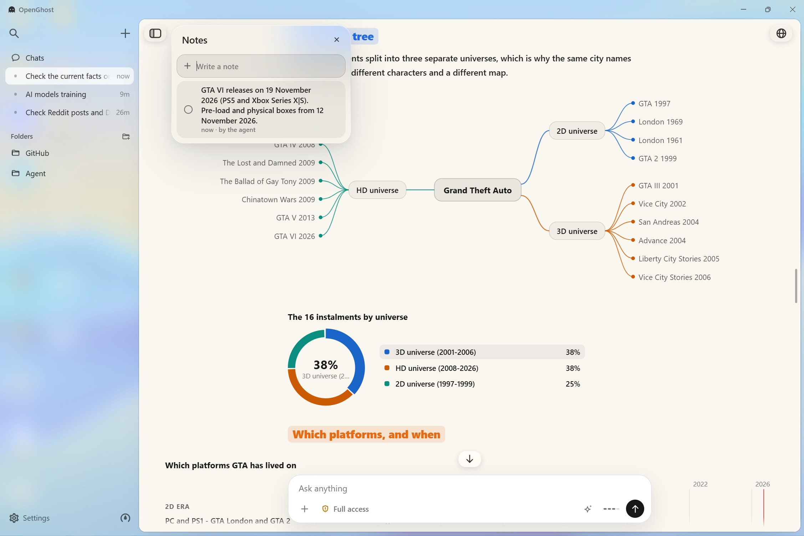
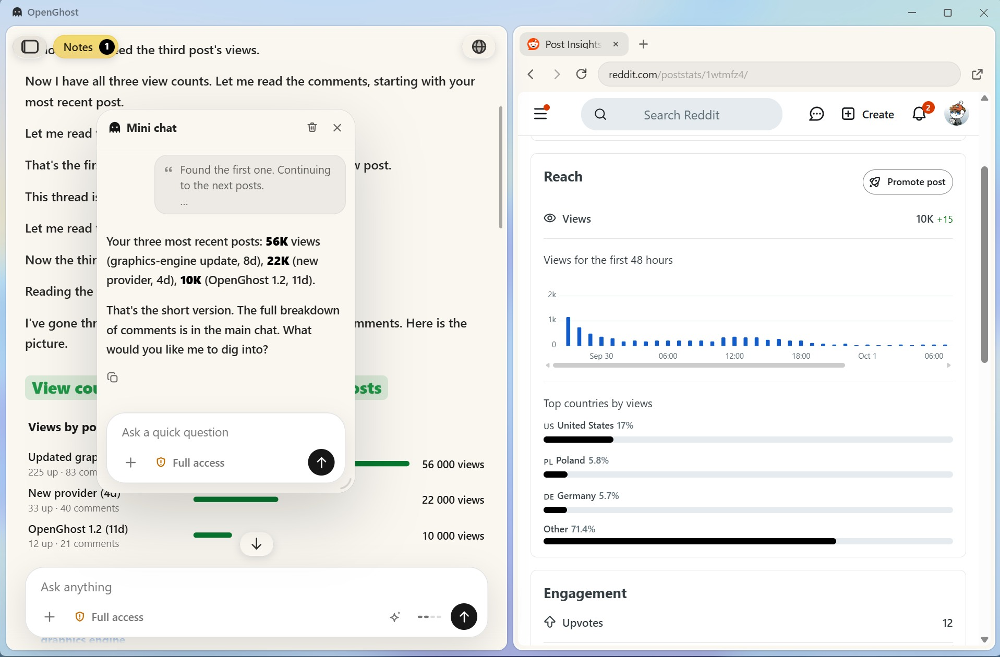
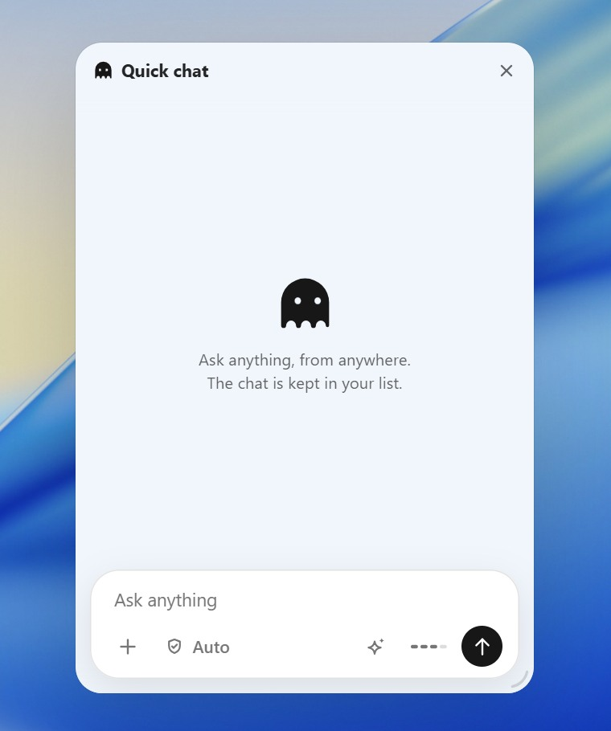
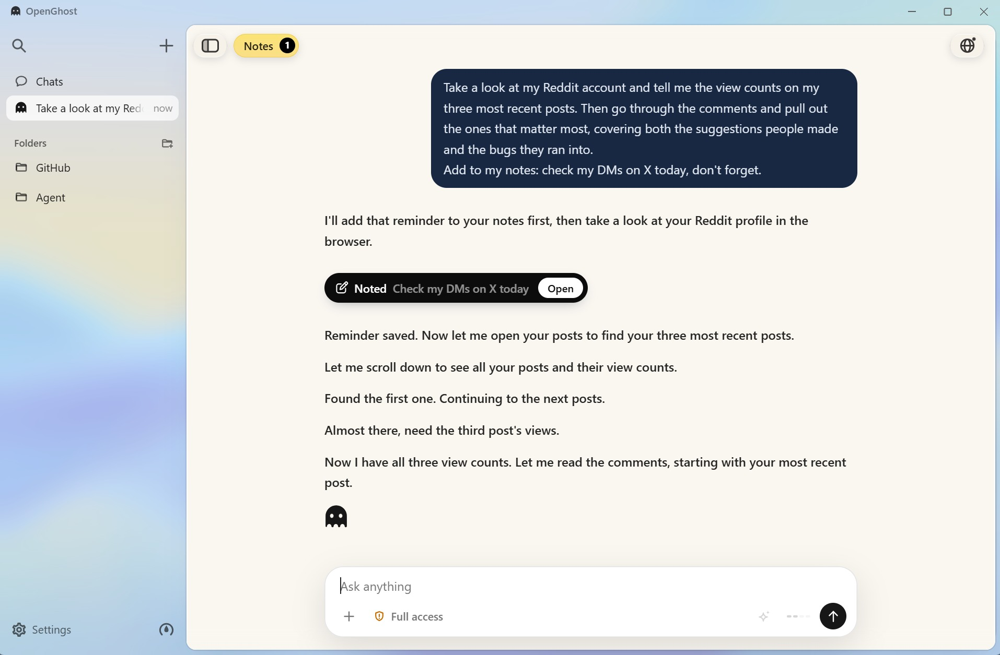
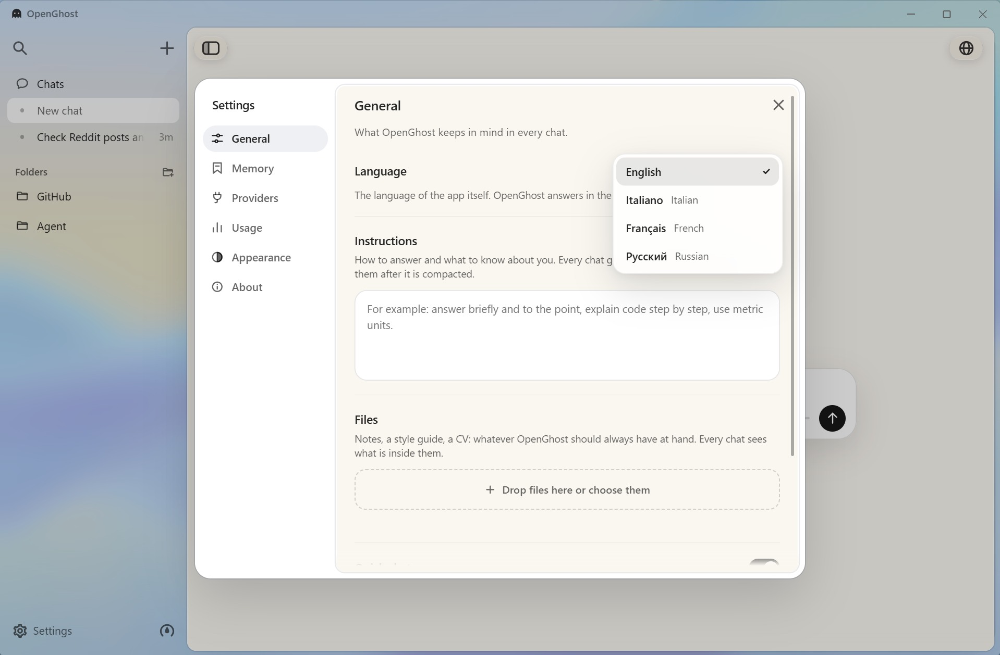
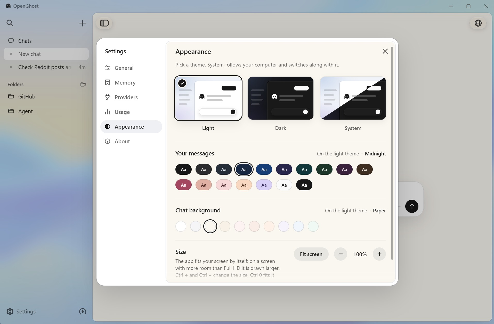

01
It shows what it explains
A scheme with the detail in it, a chart for every curve, the key numbers as metrics. Photos and videos when a thing is better seen than described.

OpenGhost runs commands, edits files and works on the web in a browser of its own. And it answers with charts, schemes, routes and photos, right in the chat.
Live demo
The interface is the app's own code. Replies are written in advance, so nothing leaves this page.
Drawing engine
No Mermaid, no chart library. OpenGhost reads what the model writes and draws it while the reply is still coming in: live, answering the pointer, editable where it stands.
Desktop agent
A scheme with the detail in it, a chart for every curve, the key numbers as metrics. Photos and videos when a thing is better seen than described.

The agent opens pages, clicks, types and reads in a panel beside the chat, signed in where you are. Mini chat runs a second agent next to the first.

Alt+Space brings up a full agent over whatever is on screen. Esc, and it is gone.

Ask it to write something down. When a conversation comes to it, the agent brings it up by itself, and never acts on a note alone.

Tell it once, in any chat. Instructions and files for every chat, and a memory you can read, change or switch off.

You decide how far it goes before it asks.
Encrypted by the operating system. Any chat can be locked with a password, with real encryption.
No UI framework, no Markdown library, no Mermaid, no agent framework. Every part is its own code.
Light, dark or the system's theme, the size of the interface, and the colour of your messages and of the chat. In English, Italian, French and Russian.

Models
Sign in with ChatGPT, or add a key for OpenAI, Claude, DeepSeek or OpenRouter. The models come from each provider's own list, so a new one shows up by itself.
Give it the address of Ollama, LM Studio or llama.cpp, and the models you have pulled show up in the picker, with the context size set for you. No account, and nothing leaves the machine.
ollama pull qwen3:30bSettings → Providers → LocalDownload